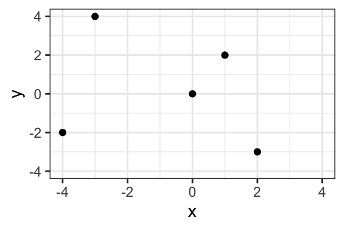

Chapter 6 Correlation Coefficient
We’ve discussed several ways to reduce data–to summarize the key features of many observations using a single (or a few) numbers.
- A histogram visually shows the density in chosen bins.
- The average tells us the location of a set of observations. Remember the seesaw analogy.
- The SD tells us the scale (or spread or disperson) of a set of observations. We can describe a list of numbers as being “about the average give or take [the SD].”
The correlation coefficient allows us to describe the relationship between two variables.
Before, we compared variables by comparing their histograms, averages, or SDs. The correlation coefficient is our first summary that compares two variables directly (rather than summarizing just one).
6.1 Intuition
The correlation coefficient measures how well two variables “go together.”
- “Go together” means “as one goes up, the other goes up [or down].”
- “Go together” has linearity built into the meaning. The correlation coefficient does not describe curved relationships.
The figure below shows some scatterplots and how well I might say these variables go together.

However, I am firmly opposed to any rules that link particular correlation coefficients to strength of relationship.
Imagine the following studies:
- A study comparing two measures of the same concept.
- A study comparing the effect of a dose of vitamin D in the first hour after birth on lifespan.
A “weak” or “small” correlation in the first study would be impossibly large in the second. The interpretation of the strength of a relationship must be made by a substantive expert in a particular substantive context.
I use two guidelines to interpret a correlation coefficient:
- 0.9 seems a lot stronger than 0.7, but 0.4 seems barely stronger than 0.2.
- Around 0.4 [-0.4], the a correlation becomes “easily noticeable” without studying the plot carefully. For smaller datasets, this threshold increases toward 1 [-1]; for larger datasets, the threshold shrinks toward 0.


Solution
| dataset | r |
|---|---|
| Dataset 1 | -0.60 |
| Dataset 2 | 0.45 |
| Dataset 3 | 0.90 |
| Dataset 4 | 0.45 |
| Dataset 5 | 0.55 |
| Dataset 6 | 0.55 |
| Dataset 7 | 0.10 |
| Dataset 8 | 0.85 |
| Dataset 9 | 0.85 |
| Dataset 10 | 0.35 |
| Dataset 11 | 0.60 |
| Dataset 12 | 0.80 |
6.2 Computing
Suppose we have the dataset below.
| x | y |
|---|---|
| 1 | 10 |
| 3 | 15 |
| 2 | 12 |
| 4 | 13 |
| 5 | 18 |

6.2.1 By Hand
We can compute the correlation coefficient \(r\) as follows:
\(r = \text{average of} \left[ (x \text{ in standard units}) \times (y \text{ in standard units}) \right]\)
Using \(\overline(x)\) to represent the average of \(x\) and \(n\) to represent the number of observations (5, in this case), we have
\(r = \dfrac{\frac{(x - \overline{x})}{\sqrt{\frac{(x - \overline{x})^2}{n}}} \times \frac{(y - \overline{y})}{\sqrt{\frac{(y - \overline{y})^2}{n}}}}{n}\).
We can implement this formula by creating the little table below and then averaging the final column of products.
| x | y | x in SUs | y in SUs | product |
|---|---|---|---|---|
| 1 | 10 | -1.41 | -1.32 | 1.87 |
| 3 | 15 | 0.00 | 0.51 | 0.00 |
| 2 | 12 | -0.71 | -0.59 | 0.41 |
| 4 | 13 | 0.71 | -0.22 | -0.16 |
| 5 | 18 | 1.41 | 1.61 | 2.28 |
The average of the final column is 0.88.
6.2.2 With R
In R, we can compute the corrlation between x and y using cor(x, y).
Note that dropping missing values is more complicated for pairs of data. If you want to drop missing values from the calculations, then cor(x, y, use = pairwise.complete.obs") is a good choice.
We can use the code below to find the correlation in the example above.
[1] 0.8814089| x | y | z |
|---|---|---|
| 2 | 8 | 7 |
| 4 | 0 | 3 |
| 5 | 5 | 5 |
| 6 | 3 | 6 |
| 4 | 6 | 6 |
| 3 | 5 | 3 |
6.3 Interpreting
In general, a correlation coefficient is NOT particularly useful. I introduce it for two reasons:
- Other people use it.
- We use it to obtain more useful quantities.
However, the correlation coefficient \(r\) has a concrete interpretation: If \(x\) is one SD larger, then \(y\) is \(r\) SDs larger on average.
We might also say that “a one SD increase in \(x\) leads to an \(r\) SD increase in \(y\) on average,” but we must take care that “leads to” describes a pattern in the data and does not describe a causal relationship.
6.4 Example: Clark and Golder (2006)
For a substantive example, consider Clark and Golder’s data.
# load parties dataset
parties_df <- read_rds("data/parties.rds")
# compute correlation between enep and eneg for each electoral system
cor_df <- parties_df %>%
group_by(electoral_system) %>%
summarize(cor = cor(enep, eneg))| electoral_system | cor |
|---|---|
| Single-Member District | 0.04 |
| Small-Magnitude PR | 0.45 |
| Large-Magnitude PR | -0.02 |
ggplot(parties_df, aes(x = eneg, y = enep)) +
geom_point(alpha = 0.5) +
facet_wrap(vars(electoral_system)) +
geom_label(data = cor_df, aes(x = Inf, y = Inf, label = paste0("cor = ", round(cor, 2))),
hjust = 1.1, vjust = 1.1) +
theme_bw()
As Clark and Golder expect, we get a correlation coefficient near zero in SMD systems. But contrary to their expectation, we also get a correlation coefficient near zero in large-magnitude PR systems.
Exercise 6.3 Interpret the correlation for small-magnitude PR systems above by filling in the following blanks:
- A one SD increase in ENEG leads to a _____ SD increase in ENEP, on average.
- A _____ unit increase in ENEG leads to a _____ unit increase in ENEP, on average.
Hint
How many units is one SD for ENEG? What about for ENEP? Going from SDs to the original units is like going from feet to yards: you just need to know how many feet are in a yard (or how many SDs are in each original unit).6.5 Example: Feeling Thermometers
Below, I compute the correlation between feelings toward the Democratic and Republican parties. It makes sense that this correlation should be negative. As respondents’ feelings toward the Democratic party grow warmer, their feelings toward the Republican party should grow cooler. We might also expect this correlation to be stronger among more educated respondents and change over time.
The example below uses the therms dataset in the pos5737data package available on GitHub.
# get pos5737data (if updated)
devtools::install_github("pos5737/pos5737data")
# load data
data(therms, package = "pos5737data")
# quick look
glimpse(therms)Observations: 38,100
Variables: 4
$ year <dbl> 1978, 1978, 1978, 1978, 1978, 1978, 1978, 19…
$ ft_democratic_party <dbl> 80, 50, 40, 60, 85, 50, 70, NA, 60, NA, NA, …
$ ft_republican_party <dbl> 50, 50, 60, 60, 60, 50, 40, NA, 60, NA, NA, …
$ education <fct> High School, 8th Grade or Less, High School,…# compute correlation between the two feelinging thermometers for
# each year and education level
smry_df <- therms %>%
# drop observations where education is missing
drop_na(education) %>%
# compute correlation for each year-education subset
group_by(year, education) %>%
summarize(cor = cor(x = ft_democratic_party,
y = ft_republican_party,
use = "pairwise.complete.obs")) %>%
# complete dataset by right-joining a dataset that has all years and all education levels combinations
right_join(crossing(year = unique(therms$year),
education = unique(therms$education))) %>%
# add a variable for presidential elections--if the year is evenly divisible by 4
mutate(election_type = ifelse(test = year %% 4 == 0,
yes = "Presidential Election",
no = "Congressional Election")) %>%
glimpse()Observations: 102
Variables: 4
Groups: year [17]
$ year <dbl> 1978, 1978, 1978, 1978, 1978, 1978, 1980, 1980, 19…
$ education <fct> 8th Grade or Less, Some High School, High School, …
$ cor <dbl> -0.219932553, -0.153398674, -0.154494861, -0.05971…
$ election_type <chr> "Congressional Election", "Congressional Election"…# plot correlations
ggplot(smry_df, aes(x = year, y = cor, color = election_type)) +
geom_point() + geom_line() +
facet_wrap(vars(education))Solution
# load data
gamson_df <- read_rds("data/gamson.rds")
# compute correlation coefficient
cor(x = gamson_df$seat_share, gamson_df$portfolio_share)[1] 0.9423176
Exercise 6.5 Use devtools::install_github("pos5737/pos5737data") to get the latest version of the pos5737 data package. Load the data set anscombe into R with data(anscombe, package = "pos5737data"). Use glimpse(anscombe) to get a quick look at the data. Realize that this one data frame actually contains four different datasets stacked on top of each other and numbered I, II, III, and IV.
- Use a
group_by()andsummarize()workflow to compute a correlation coefficient for each of the four datasets. How do they compare? What do they suggest about the strength of the relationship between \(x\) and \(y\)? - Create a scatterplot of \(x\) and \(y\) with separate panels for each dataset. How do they compare? How would you describe the strength of the relationship between \(x\) and \(y\) in each panel? Would you say that the correlation coefficient offered a good summary of each dataset?